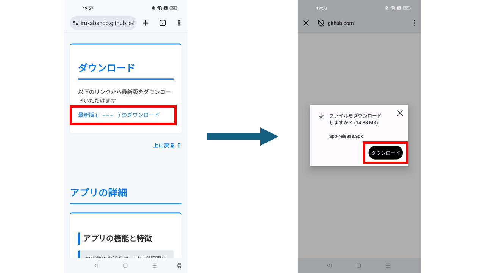
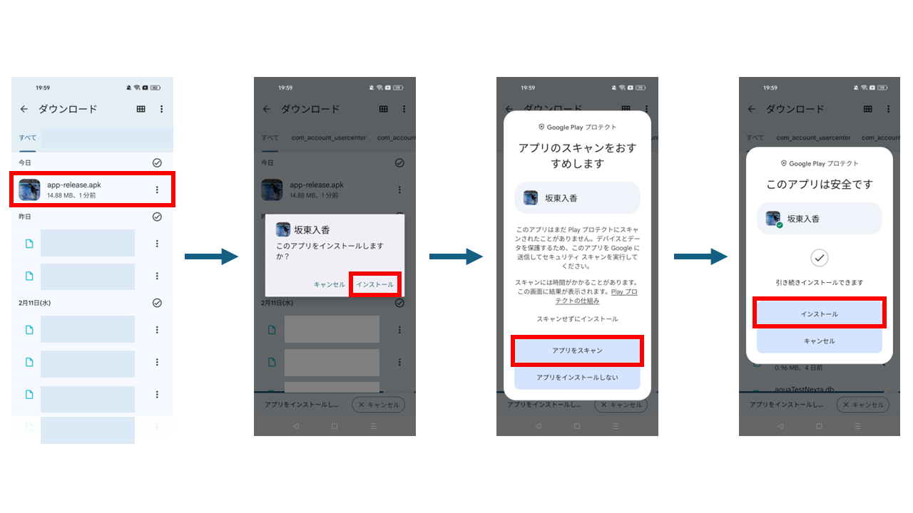
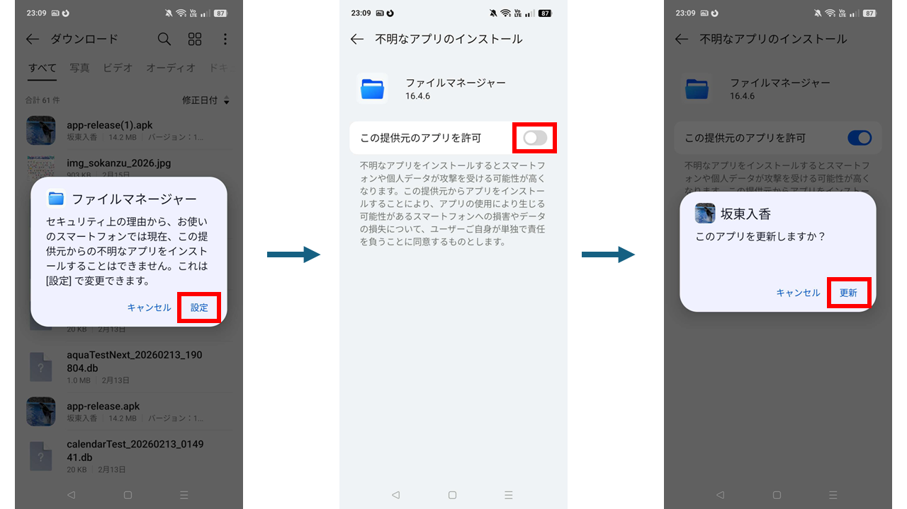
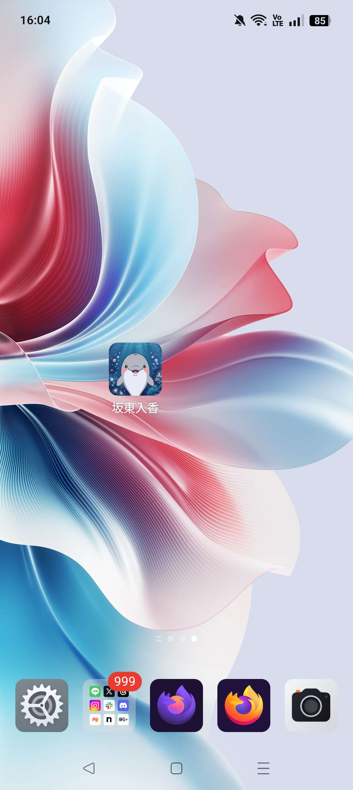
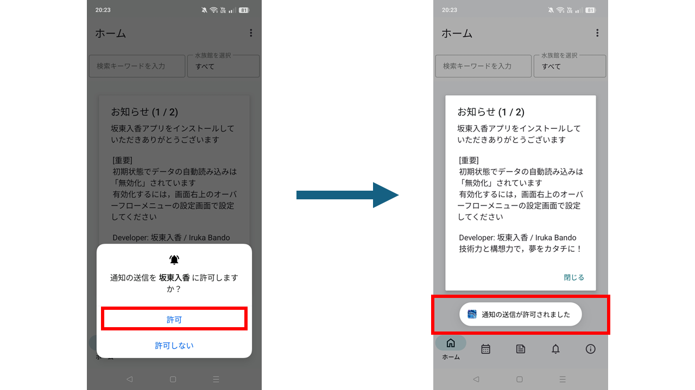
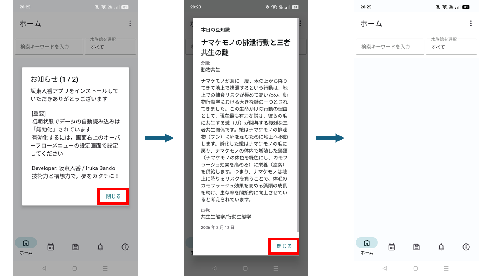
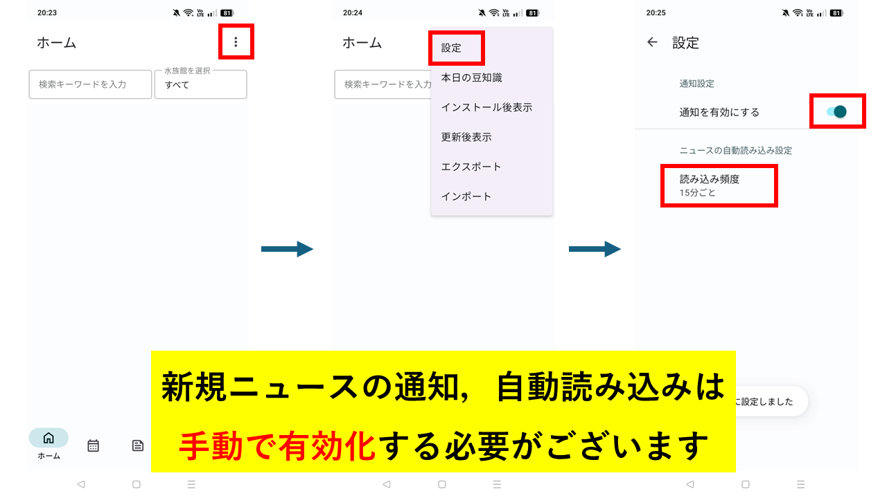
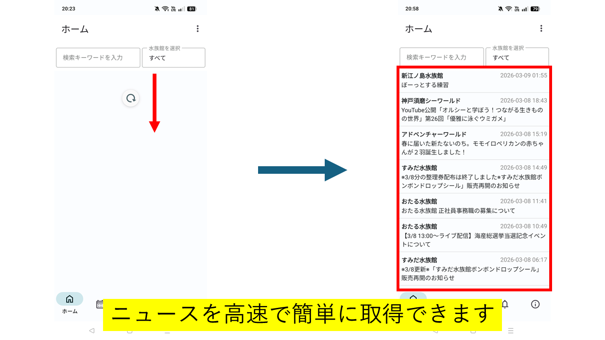
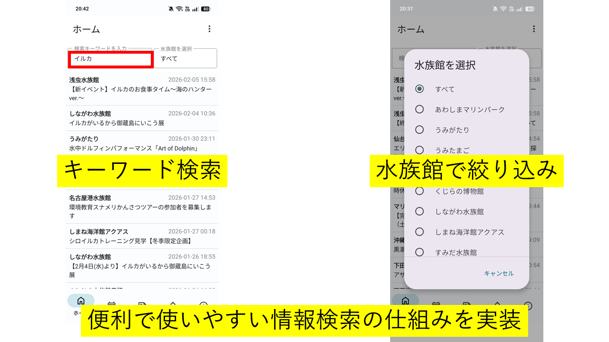
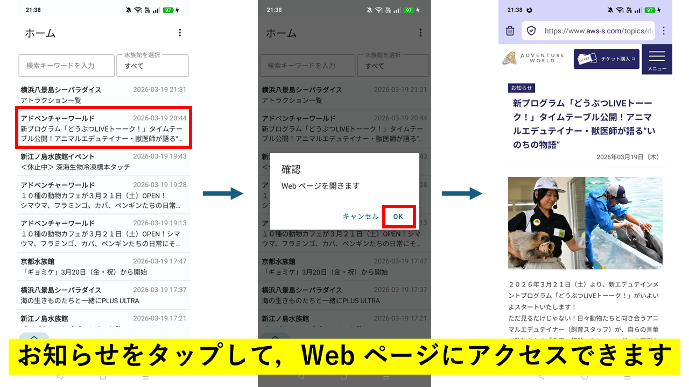

インストール（アップデート時共通）
1. apk ファイルのダウンロード
下のリンクをクリックして，本アプリの最新版をダウンロードしてください。
こちらをクリック（ダウンロードサイトに飛びます）

2. インストールの実行
ダウンロードした apk ファイルをファイルマネージャーなどで探し，ファイルをタップしてインストールを実行してください。

不明なアプリである旨の警告が出た場合は，設定をタップし，許可をお願いいたします。

インストール完了を示す通知が表示されれば，完了です。
初回起動
以降は，初めてインストールした方のみが必要な操作です。アップデートの場合は不要です。
1. 起動・通知の許可
インストールした坂東入香アプリをアプリ一覧などから探し，起動してください。
イルカのアイコンが目印です。

通知の送信を許可してください。新たなお知らせの通知の受信に必要です。

2. ポップアップの確認
ポップアップがいくつか表示されます（バージョンにより変わります）。確認してから，右下の「閉じる」をタップしてください。

3. 初回起動時の設定
初期状態では，通知の送信およびニュースの自動読み込みが無効化されています。
水族館の最新ニュースを定期的に受信するためには，通知と自動読み込みの有効化が必要です。
右上の「...」をタップして，オーバーフローメニューを表示し，「設定」をタップしてください。
「通知を有効にする」をタップし，スイッチをオンにしてください。
「読み込み頻度」をタップし，頻度を選択してください。1時間程度で構いません。お好みで調整してください。
自動読み込みとは，指定した頻度で水族館のウェブページをスクレイピングし，データベースに格納する処理です。 通知と自動読み込みを有効にすることで，水族館の最新情報を定期的に受け取ることができます。

基本的な使い方
1. 手動でニュースの読み込みを実行
画面を下にスワイプし，ニュースを読み込みます。 ウェブページから情報を取得しますので，スマホをインターネットに接続した状態で実行してください。

2. 通知
水族館の最新ニュースを受信した際に，通知を受け取ることができます。
通知の送信の許可および，設定画面での通知，自動読み込みを有効化しておく必要があります。

3. メイン画面の使い方
便利で使いやすい情報検索ができます。

一覧のお知らせをタップするだけで，ブラウザが起動し，お知らせの情報源にアクセスできます。

4. 本日の豆知識
1日1つ豆知識を閲覧できます。AI で生成しているため，誤りが含まれる可能性があります。
豆知識は，日付変更後の初回起動時および，右上のオーバーフローメニューから表示できます。

5. 来館記録
来館登録や来館記録の表示を行うことができます。
右上の「来館登録」ボタンをタップすることで，来館記録が保存されます。 来館登録を行うためには，詳細な位置情報の許可と有効化が必要です。 登録した来館登録は，消去できません。 位置情報の照合をせずに，来館登録を行うことはできません。
来館記録は，水族館名と期間で絞り込むことができます。 絞り込みの条件に合致する記録が，直近の記録から順に表示されます。

「簡易」スイッチをオンにすると，指定期間内の水族館ごとの来館数が降順で表示されます。